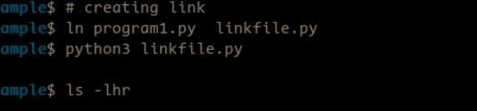

The `ln` command in Linux is a powerful utility used to create links between files. It is an essential tool for managing files in a more flexible and organized way. In Linux, there are two types of links: hard links and symbolic (or soft) links. The `ln` command can create both types of links, providing users with the ability to refer to files using multiple names, whether they reside in the same directory or different directories.
A hard link is essentially an additional reference to the same inode (physical file data) in the file system. When you create a hard link, it points directly to the file’s data blocks. Both the original file and the hard link share the same inode and, as a result, any changes made to one file will reflect in the other. It is important to note that hard links cannot span different file systems, and they cannot be created for directories (except for the special '.' and '..' entries).
On the other hand, a symbolic link is a special type of file that contains a reference to another file or directory. Unlike hard links, symbolic links are independent of the target file’s inode, and they can point to files across different file systems or even directories. A symbolic link can be thought of as a shortcut or pointer to another file, and if the original file is moved or deleted, the symbolic link will become broken (i.e., it will point to a non-existent file).
To create a hard link, you would use the following syntax: ln . This command creates a hard link named ln file1.txt file2.txt, it will create a hard link named `file2.txt` that refers to the same data as `file1.txt`.
To create a symbolic link, you would use the `-s` option with the `ln` command: ln -s . For example, running ln -s /path/to/original/file /path/to/symlink will create a symbolic link to the original file at the specified location.
The `ln` command is useful for many scenarios, such as managing large sets of files, creating shortcuts for commonly used files or directories, and maintaining file references across different locations. However, it’s essential to be aware of the differences between hard and symbolic links and to choose the appropriate type of link based on the specific use case. Additionally, symbolic links are more commonly used because they are more flexible and can span file systems, while hard links are typically used in situations where you need to maintain multiple references to the same file data.
Click Here For More